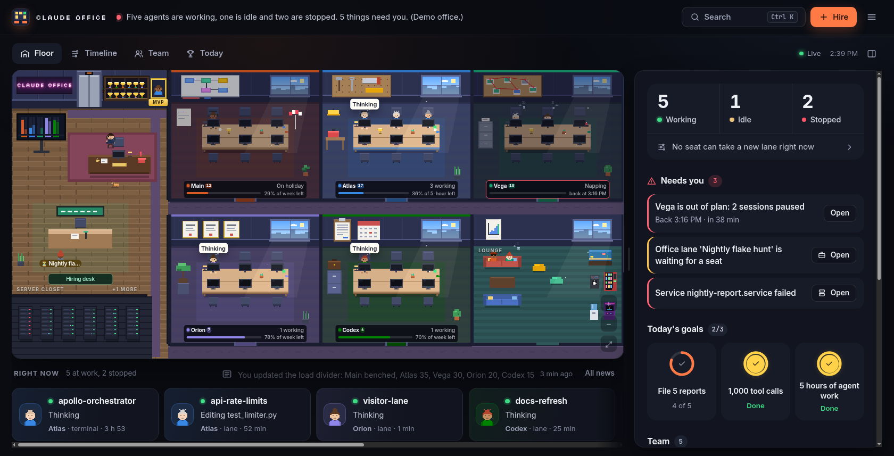

The floor
A calm floor you can read in one glance
The header sums up the office in plain English: who is working, who is out of plan and until when, and where the next lane would go.
- Each desk's nameplate says who it is, what it's doing and how much plan is left, in words: "3 working · 36% of 5-hour left".
- Workers type, read, think and wait on long tools, sweat when stuck, and fall asleep when their seat is out of plan.
- A "Right now" strip of cards under the floor shows who is at work and what each one is doing.
- Pixel the office cat wanders the corridors and naps in the lounge. Click her for a tip.